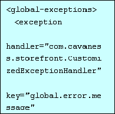

ITEEDU
5.2 使用异常处理声明
要定义应用程序的逻辑流程，成熟的经验是推荐在代码之外，用配置的方法来实现，而不是写死在程序代码中的。在J2EE中，这样的例子比比皆是。从实现EJB的安全性和事务性行为到描述JMS消息和目的地之间的关系，很多运行时的处理流程都是可以在程序之外定义的。
Struts 创建者从一开始就采用这种方法，通过配置Struts的配置文件来定制应用系统运行时的各个方面。这一点在版本1.1的新特性上得到延续，包括新的异常处理功能。在
Struts framework以前的版本中，开发人员不得不自己处理Struts应用中发生的错误情况。
在最新的版本中，情况大大的改观了，Struts Framework提供了内置的一个称为ExceptionHandler 的类， 用于系统缺省处理action类运行中产生的错误。这也是在上一个
技巧中我们提到的framework许多可扩展接口之一。
Struts缺省的ExceptionHandler类会生成一个ActionError对象并保存在适当的范围（scope）对象中。这样就允许JSP页面使用错误类来提醒用户出现什么问题。如果你认为这不能满足你的需求，那么可以很方便的实现你自己的ExcepionHandler类。
具体定制异常处理的方法和机制要定制自己的异常处理机制，第一步是继承org.apache.struts.action.ExceptionHandler类。这个类有2个方法可以覆盖，一个是excute()另外一个是storeException(). 在多数情况下，只需要覆盖其中的excute()方法。
下面是ExceptionHandler类的excute()方法声明：

正如你看到的，该方法有好几个参数，其中包括原始的异常。方法返回一个ActionForward对象，用于异常处理结束后将controller类带到请求必须转发的地方去。当然您可以实现任何处理，但一般而言，我们必须检查抛出的异常,并针对该类型的异常进行特定的处理。缺省的，系统的异常处理功能是创建一个出错信息，同时把请求转发到配置文件中指定的地方去。定制异常处理的一个常见的例子是处理嵌套异常。假设该异常包含有嵌套异常，这些嵌套异常又包含了其他异常，因此我们必须覆盖原来的execute()方法，对每个异常编写出错信息。
一旦你创建了自己的ExceptionHandler 类，就应该在Struts配置文件中的部分声明这个类，以便让Struts知道改用你自定义的异常处理取代缺省的异常处理.可以配置你自己的ExceptionHandler 类是用于Action Mapping特定的部分还是所有的Action对象。如果是用于Action Mapping特定的部分就在元素中配置。如果想让这个类可用于所有的Action对象,可以在元素中指定。例如，假设我们创建了异常处理类CustomizedExceptionHandler用于所有的Action类, 元素定义如下所示：

在元素中可以对很多属性进行设置。在本文中，最重要的属性莫过于handler属性,handler属性的值就是自定义的继承了ExceptionHandler类的子类的全名。假如该属性没有定义，Struts会采用自己的缺省值。当然，其他的属性也很重要，但如果想覆盖缺省的异常处理的话，handler无疑是最重要的属性。最后必须指出的一点是，你可以有不同的异常处理类来处理不同的异常。在上面的例子中，CustomizedExceptionHandler用来处理任何java.lang.Exception的子类. 其实，你也可以定义多个异常处理类，每一个专门处理不同的异常树。下面的XML片断解释了如何配置以实现这一点。

在这里，一旦有异常抛出，struts framework将试图在配置文件中找到ExceptionHandler，如果没有找到，那么struts将沿着该异常的父类链一层层往上找直到发现匹配的为止。因此，我们可以定义一个层次型的异常处理关系结构，在配置文件中已经体现了这一点。